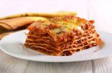

pagina inicial
Lasagna

receita muito simples de lasanha feita em forno
feita com molho de tomate, queijo, massa pronta e carne moida!
ingredientes:
- 500 g de massa de lasanha
- 2 caixas de creme de leite
- 3 colheres de farinha de trigo
- 500 g de carne moída
- 3 colheres de manteigav
- 500 g de presunto
- 500 g de mussarela
- sal a gosto
- 2 copos de leite
- 1 cebola ralada
- 1 caixa de molho de tomate
- 3 colheres de óleo
- 3 dentes de alho amassados
- 1 pacote de queijo ralado
modos de preparo
-
Cozinhe a massa segundo as orientações do fabricante,
despeje em um refratário com água gelada para não grudar e
reserve.
-
Refogue o alho, a cebola, a carne moída, o molho de tomate,
deixe cozinhar por 3 minutos e reserve.
-
Derreta a margarina, coloque as 3 colheres de
farinha de trigo e mexa.
-
Despeje o leite aos poucos e continue mexendo.
-
Por último, coloque o creme de leite,
mexa por 1 minuto e desligue o fogo
-
Despeje uma parte do molho à bolonhesa em
um refratário, a metade da massa,
a metade do presunto, a metade da mussarela,
todo o molho branco e o restante da massa.
-
Repita as camadas até a borda do recipiente.
-
Finalize com o queijo ralado e leve ao forno alto (220° C),
preaquecido, por cerca de 20 minutos.